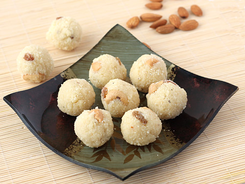

Ingredients
1.Rava (Sooji) - 2 cups
2.Evaporated Milk - 150ml or 5oz
3.Unsalted Butter - 1/4 cup (You can also use ghee instead)
4.Dry Shredded Coconut Powder - 1 ½ cups
5.Sugar - 2 cups
6.Cardamom Powder - ½ tsp
7.Saffron - 1 pinch, powdered (optional)
8.Raisins – ¼ cup (roasted in a little butter)
9.Cashew/Almond/Pistachio - ¼ cup (coarsely chopped/sliced and roasted in a little butter/ghee)
Method
1.Melt the butter in a non-stick pan.
2.Add the rava and fry until you get a nice aroma.
3.Add shredded coconut and sugar and mix well on low heat for
few seconds.
4.Add raisins, nuts, saffron, cardamom powder and mix well.
5.Add the evaporated milk and turn off the stove.
6.Keep mixing for few minutes until the evaporated milk is well
incorporated.
7.Remove pan from stove to prevent the rava from getting burnt.
8.While the mixture is still hot, take a small quatity of the
mixture and roll it into balls. You can the balls as small or
as big as you want.